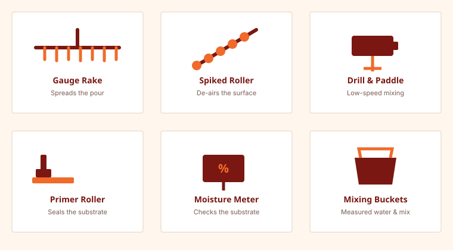

A typical pour needs a primer and roller, a low-speed mixing drill and paddle, mixing buckets, a gauge rake, a spiked (de-aerating) roller, a moisture meter, and edge-control materials like cove strip or dam tape for larger or open-plan pours.

Preparation Tools

Before priming or pouring, the subfloor needs to be cleaned and checked. A stiff broom or shop vacuum removes debris and dust, and a degreaser handles any oil or grease contamination. A moisture meter confirms the substrate is within the product's allowable moisture range before you commit to priming.
Priming Tools
A paint roller with an extension pole applies primer evenly across a large floor area without excessive kneeling. Choose a roller nap appropriate for the primer's viscosity as specified on the product label.
Mixing Tools
A low-speed (400–600 RPM) mixing drill paired with a mixing paddle designed for cementitious compounds produces a lump-free, consistent mix — a standard high-speed drill can introduce excess air or an inconsistent blend. Two clean buckets let you measure water precisely and mix in batches sized to your working time.
Pouring and Spreading Tools
- Gauge rake: spreads the poured compound into rough position across the floor.
- Spiked (de-aerating) roller: releases trapped air bubbles from the wet surface before it sets.
- Cove strip / dam tape: controls pour boundaries at doorways or large open-plan transitions.
- Knee boards or foam pads: let you work across a wet pour without leaving footprints, if needed for a large room.
Safety and Cleanup
Cementitious dust from mixing can irritate eyes, skin, and lungs — safety glasses, gloves, and a dust mask are standard precautions during mixing. Clean tools and buckets with water before the compound cures on them, since cured material is difficult to remove without damaging the tool.
Frequently Asked Questions
Do I need a special drill for mixing self-leveling concrete?
A low-speed mixing drill (often 400–600 RPM) paired with the right paddle produces a more consistent, lump-free mix than a standard high-speed drill, and is generally recommended by manufacturers.
Is a spiked roller really necessary?
Yes for most pours — it releases trapped air that would otherwise cure into visible surface bubbles or pinholes.
Related Guides
Sources & References
- Manufacturer installation instructions listing recommended tools and mixing equipment